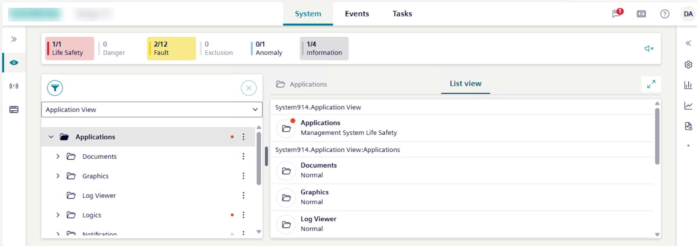

Access Flex Client URL
Prerequisites
- A Flex Client application was configured in SMC.
Scenario
You want to try accessing the configured Flex Client URL from a browser on the networked device or computer that you want to use as a Flex station.
Obtain the Flex Client URL
On the Desigo CC station where you created the Flex Client web application:
- In SMC, select Websites > [website] > [flex client application].
- In the Web Application Details expander, click the URL link.
- Ensure that the Desigo CC Flex app login page displays. This confirms that the Flex app is configured and reachable from the same computer where it is hosted.
- Click Copy URL or make a note of the URL, to test it on a separate device.
Import Certificates into the Device Accessing Flex Client
Since the Flex Client URL is https://, the networked computer or device from which you access it must recognize the certificate of the parent website (see Website in SMC, above). This requires installing the appropriate certificate into its Trusted Root Certification Authorities (TRCA) store:
- If a self-signed certificate was used for the website, then install that self-signed certificate into the TRCA store of the device accessing Flex Client.
- If a host certificate was used for the website, then install the root of that host certificate into the TRCA store of the device accessing Flex Client.
NOTE: If the certificate is not present, the browser will show a Not Secure warning when navigating to the Flex Client URL. If this happens, you can still opt to proceed to the Flex Client for test purposes. For example, in the Chrome desktop browser, click Advanced and then click the link proceed to [computer name] (unsafe). However, to make the Flex Client station properly operational you must import the appropriate certificates into the computer or device:
Launch Flex Client in the Browser
- Browser requirements: Flex Client runs on the latest versions of Chrome, Edge, Firefox and Safari. It is tested on Microsoft Windows, MacOS, iOS and Android operating systems. For more details, see the browser compatibility tables.
When using Firefox web browser, disable the setting Use hardware acceleration when available for proper visualization of graphics.
- On the separate computer or device where you want to launch Flex Client, paste or type the Flex Client URL into the browser address bar.
- The Desigo CC Flex web app login page displays.
- Enter your Desigo CC user name and click Next.
- Enter your password and click Login.
- If the Select a Certificate dialog displays, click Cancel.
Note: The certificate selection at this point would be necessary to run an identified Flex client. However, for the present test purposes it is sufficient to log in as an anonymous Flex client.
- The Flex web app displays in the browser.

Browser Compatibility Tables
Browser Compatibility with Operating System | |
|---|---|
Operating System | Compatible Browsers |
Microsoft Windows |
|
macOS |
|
Mobile Browsers Compatibility with Mobile Operating Systems | |
|---|---|
Mobile Operating System | Compatible Mobile Browsers |
Android |
|
iOS |
|